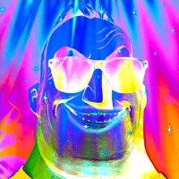

Depressive
Everything feels heavy. Time moves slowly.
Click between states to experience the shift in perception, tone, and speed.
💡 Swipe left or right to switch states
Manic:
0:00
Mixed:
0:00
Depressive:
0:00
